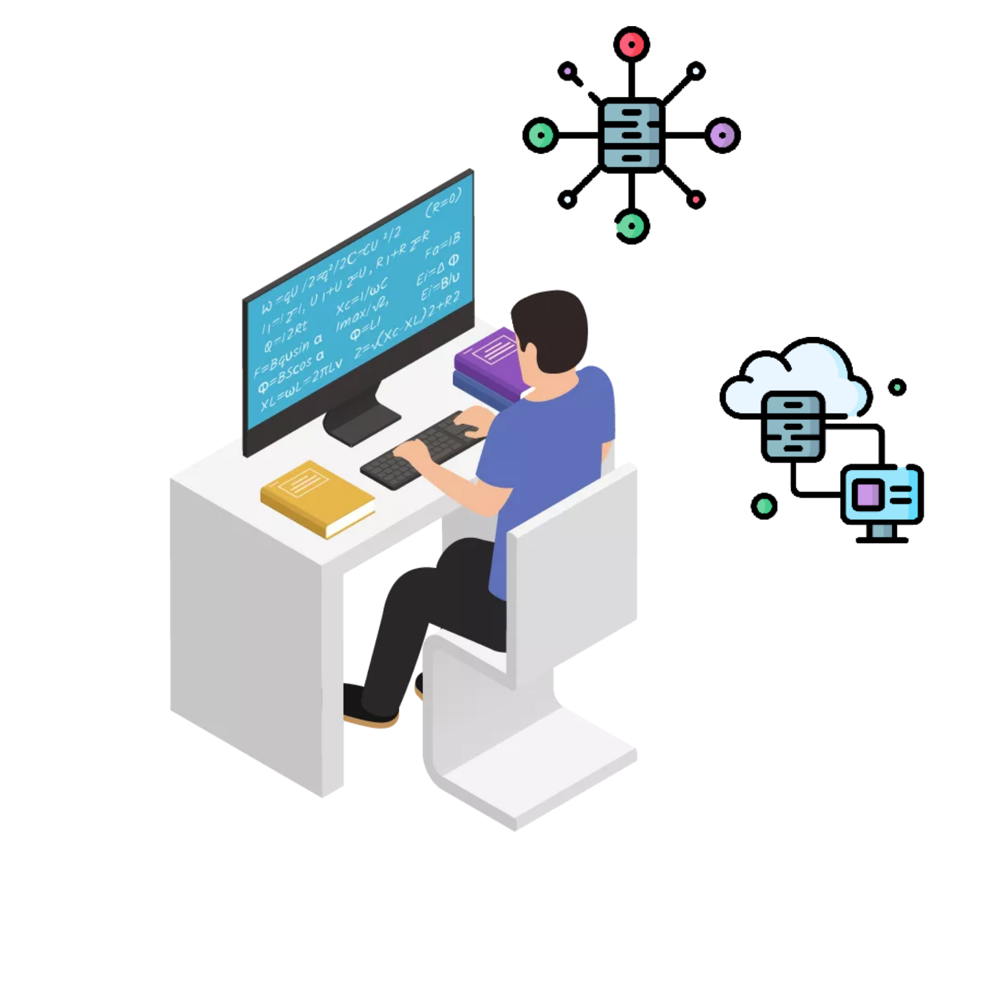
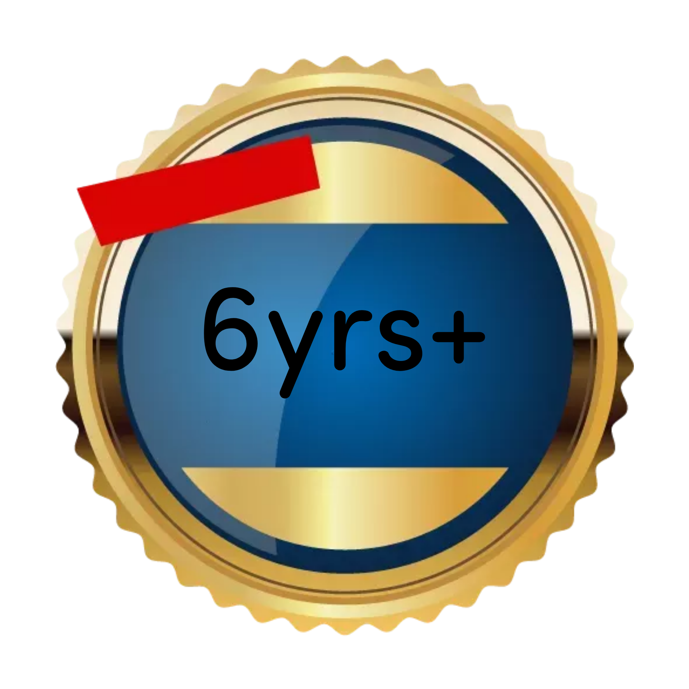
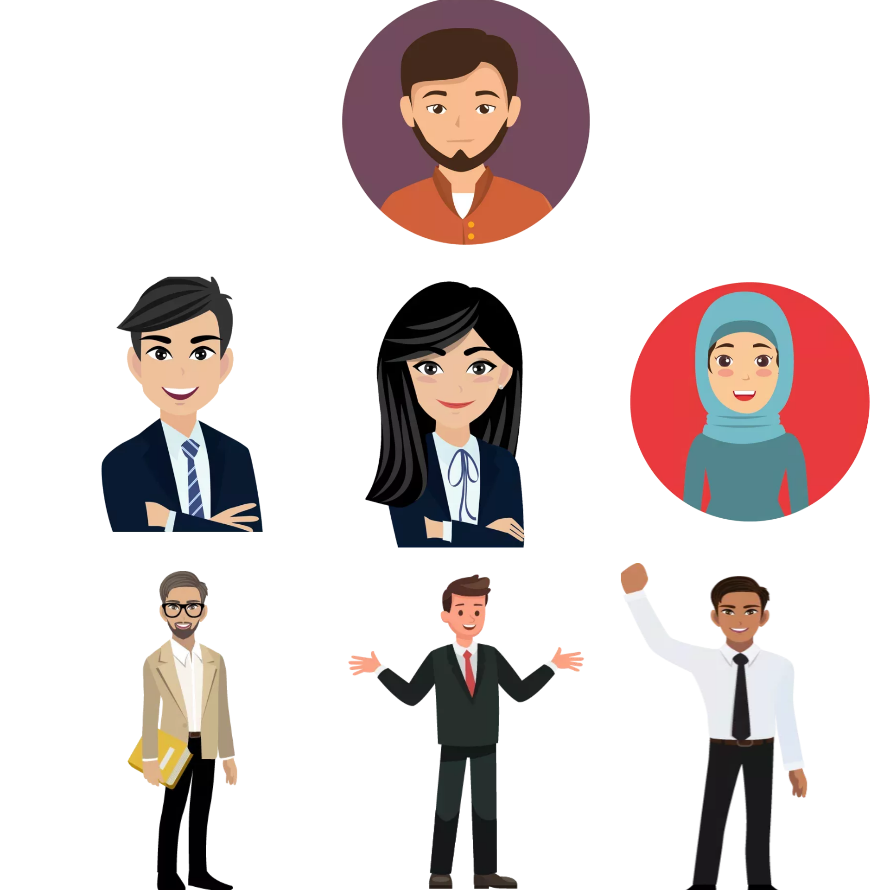

I'm a Web Developer and graphics designer Abdulmumin Ahmed

A Full-time web developer and graphics designer with 70+ achievements and awards.
Setting records, breaking limits. Designing with high taste and full passion.
I have been hired by different reputable companies and commercial businesses
such as Banks, Schools, Restaurants and many more. Tested, Trusted, Approved,
and highly recommended.
About Me
Over six years in the creative industry
My name is Abdulmumin Ahmed, I am a student of the University of Ilorin, Nigeria.
I am a skilled web developer and graphic designer presenting unique projects.
I work with both large scale and individual businesses, and i always find a great approach to the tasks given to me.
I enjoy creating things that live on the internet.
My interest in web development started back in 2012 when i decided to try editing custom Tumblr themes. Turns out hacking together a custom reblog button
taught me a lot about HTML & CSS! Let's not forget Graphics designing too.
Graphics designing has always been one of the easiest skill that i know, there's no doubt that
i am one of the best designer out there.
Fast foward to today, and i've had the privilege of working with Dangote(Africa's richest man)
My main focus is creating and designing websites alongside with banners and logos for companies, individuals, commercial businesses, Schools and other business enterprises.
I also recently launched a course that covers everything that one needs to know about design.
My Experience
More than 6 years of Experience
I'm so experienced that how experienced is too experienced? I've been a web developer and graphics designer since 2016 and the journey hasn't been so smooth.
Fast foward to today, I am now a Pro in web development and graphics design.
I have worked for over 150 clients, including companies, commercial businesses and schools.
I've worked as a team with different groups in managing and designing their websites and i've also worked alone. Majority of
the projects that i work on, i do them alone and not with some group of people but some companies require people to work with their team.

My Customers
I've worked and i'm still working for reputable companies
like Microsoft, Apple, Dangote groups and many other companies that i can't start mentioning.
Keep in mind that i don't only work for large scale companies and industries, i also work for individuals who own
restaurants, and those who sell online and want to get noticed. No business is too small so bring your website and design
projects today and let's build you something great. I work for both local and international organisations, like the local
and popular Nigerian Chicken Republic restaurant, and the popular international
KFC.

My Services
1. I TEACH
I teach kids and adults how to develop and design websites, using different languages such
as HTML, CSS, PHP, JAVASCRIPT, PYTHON, and how to design banners, flyers, and logos for them
with many designing tools. Not limited to that only, I also give career advices on what
to do and what not to do. I teach people how to make money online, what keywords to use, what platforms to join, and also what programs to attend.
My teaching techniques are very unique and standard. My students must build and publish their own portfolio before they get certified.
Over 200 students have graduated from my lesson, and they now have their own personal portfolio and different websites which they are earning cool money from.
Some of them own blogs, some of them own online shopping sites, and many more. If you are ready to enrol your kids, I am ready to teach them.
2. I DESIGN
Designing and developing website is my main focus, other services that i render are along the way.
I design websites to beautiful and classic taste, I revise projects unlimited times for clients that pays nothing less $1000 or more.
I've designed websites for different businesses like hotels, movie industries, online stores and many more. I've worked for over 150 clients and still counting.
Bring your web development
projects and be part of our happy customers.
I also design logos and flyers that you can place on your website as adverts gain more audience.